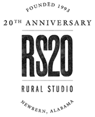
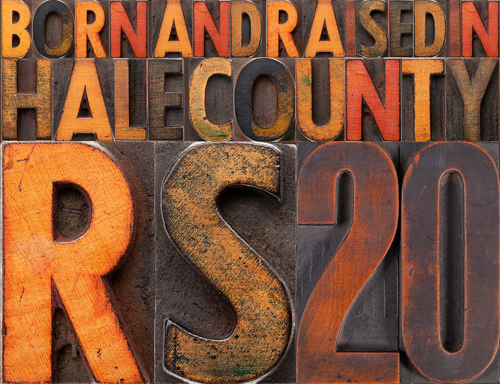

Rural Studio’s 20th Anniversary
Rural Studio at 20: Honoring the people and the place
Auburn University Rural Studio is celebrating its 20th anniversary during the 2013‒2014 academic year.
Rural Studio was founded in 1993 by architecture professors Samuel Mockbee and D.K. Ruth. Putting into practice their philosophy that everyone deserves access to good design, they led a group of architecture students to rural West Alabama to give them a hands-on, educational experience, designing and building for an underserved population. Since 2001 the Studio, under the direction of Andrew Freear, has evolved toward more community-oriented projects across four counties. With a triple focus of community, housing, and food, the multi-year, multi-phase projects—such as the recently completed Newbern Town Hall—continue the Rural Studio ethos of recycling, reusing, remaking and delighting in using local materials, while maintaining the belief that affordable, good design is important to all.
In establishing Rural Studio, Mockbee was convinced that architecture must have a strong ethical imperative to be meaningful. He believed architects should become leaders in bringing about environmental and social change, and called on them to place less emphasis on pleasing the rich and more on helping those who don’t have access to design services but need them. Mockbee wanted to supplant the predominantly theoretical “paper architecture” that was taught in most schools with hands-on teaching methods that included implementing designs on-site. For this initiative, Mockbee posthumously received the AIA Gold Medal, the greatest accolade in American architecture.
Twenty years and 150 projects later, Rural Studio continues to educate citizen architects through a mixture of hands-on learning and a healthy dose of social activism. The Studio’s rich existence in rural West Alabama is now rooted in building relationships and earning trust from their neighbors and friends in the community. Immersing themselves in West Alabama has afforded their students the opportunity to apply their skills as designers, while also learning about the nature, history, culture, economy, architecture and community in this unique educational landscape.
THE 20TH ANNIVERSARY
To celebrate its 20th Anniversary, August 2013-April 2014, Rural Studio will:
1. Design and build EIGHT 20K Houses in its local community
The 20K House, an ongoing research project, initiated in 2005, aims to design and build a series of model homes to be propagated on a large scale by a contractor and built for $20,000. It addresses a desperate rural need for affordable housing models and, being locally site-built, becomes an economic engine. To date, Rural Studio has designed and built twelve versions of the 20K House and is now moving the House out of the research phase into production.
2. Complete the following ongoing community projects:
- Greensboro Boys & Girls Club: a 5000 square foot learning center next to the city recreation center
- Scout Hut for Greensboro troop 13: an 1800 square foot headquarters for the local scout troops in Lions Park
- Lions Park: two phases, one addresses park planting and drainage, the other examines exercise stations, sponsored by a grant from the Alabama Department of Public Health (ADPH)
- Newbern Library: the reuse of the town’s historic bank building as a new learning, information, and social center
- Rural Studio Farm: the construction of a greenhouse, irrigation system, planter beds, and future expansion plans
3. Host a number of events throughout the year, including three Alumni Lecture Nights, a Lecture Series of national and international guests, and special Soup & Pig Roasts at the culmination of each semester.
Rural Studio invites you to its 20th anniversary celebration with our fundraising campaign www.supportruralstudio.com. Your generous support, received on behalf of Rural Studio by the Auburn University Foundation, helps to build a home for a family today and educate the citizen architects of tomorrow.
For more information on making a tax-deductible donation in support of Rural Studio or 20th Anniversary news, contact Natalie Butts at buttsnr@auburn.edu.
20TH ANNIVERSARY SPRING EVENTS
January 8 - Convocation – Spring Semester
January 11 - Alumni Lecture Night #3
Thomas Palmer ’99, Palmer Built Environments
James Kirkpatrick ’01, Bohlin Cwyinski Jackson
Sarah Dunn ’03, Engineering Ministries International-East Africa
Sam Currie ’05, Gluck +
Sabina Nieto ’07, University of San Francisco
Brett Jones ’09, David Baker Architects
Will McGarity ’11, Jones Valley Teaching Farm
Bruce Lanier ’99, Standard Creative
James Kirkpatrick ’01, Bohlin Cwyinski Jackson
Sarah Dunn ’03, Engineering Ministries International-East Africa
Sam Currie ’05, Gluck +
Sabina Nieto ’07, University of San Francisco
Brett Jones ’09, David Baker Architects
Will McGarity ’11, Jones Valley Teaching Farm
Bruce Lanier ’99, Standard Creative
January 13
Claire Maxfield Lecture, Atelier Ten
January 16
Glenn Murcutt Lecture, Glen Murcutt Architect
February 6
Peter Gluck Lecture, GLUCK+
February 7
Dan Wheeler Lecture, Wheeler Kearns Architects
February 14
Brian MacKay-Lyons Lecture, MacKay-Lyons Sweetapple Architects Limited
February 20
Bob Bagdigian, NASA
February 27
Tom Kundig Lecture, Olson Kundig Architects
March 3
Mike Pyatok Lecture, Pyatok Architects
March 18
Frank Harmon Lecture, Frank Harmon Architect
March 21
Tod Williams + Billie Tsien Lecture, Tod Williams Billie Tsien Architects
March 27
Xavier Vendrell Lecture, Xavier Vendrell Studio
April 3
Roy Decker Lecture, Duvall Decker Architects
Steve Dumez Lecture, Eskew+Dumez+Ripple
Steve Dumez Lecture, Eskew+Dumez+Ripple
April 4
Sarah Wigglesworth Lecture, Sarah Wigglesworth Architects
April 8
Dan Rockhill Lecture, Rockhill and Associates
April 10
David Perkes Lecture, Gulf Coast Community Design Studio
Adam Hopfner Lecture, Yale Building Project
Emilie Taylor Lecture, Tulane City Center
Adam Hopfner Lecture, Yale Building Project
Emilie Taylor Lecture, Tulane City Center
April 25 - Greensboro Boys & Girls Club, Newbern Library, Scout Hut, and Lions Park Fitness and Landscape Openings
April 26 - Pig Roast with special surprise guests

/
- 
-
-
-
-
-
-
-
-
-